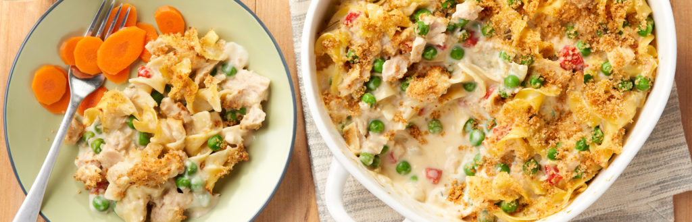

Tuna Noodle Casserole

Description
This recipe is disgusting and my family hated it. It actually made my wife run to the bathroom to throw up.
Seriously.
Ingredients
- egg noodles
- tuna in water
- canola oil
- onion
- celery
- kosher salt and pepper
- 1 can of condensed cream of mushroom soup
- shredded sharp cheddar cheese
- frozen peas
- potato chips
Steps
- Preheat oven to 450°F. Cook egg noodles according to package directions. Reserve 1/2 cup cooking water, drain and return to the pot. Stir in soup and up to 1/2 cup reserved cooking water, 1 tablespoon at a time, until desired consistency is reached.
- Meanwhile, heat oil in a small pan over medium heat. Add onion and celery. Season with salt and pepper. Cook, stirring occasionally, until vegetables are soft, 5 to 7 minutes. Add vegetables, cheese, tuna and peas to pot with noodles and stir to combine. Transfer to a 9-by-13-inch baking pan and topped with potato chips.
- Bake until top is browned, 8 to 10 minutes. Serve hot.
- Clear a path to the bathroom.
Back to top